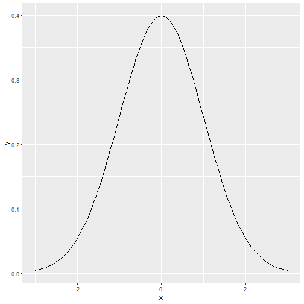

means <- apply(matrix(rexp(40000, 0.2),nrow = t, ncol = n),1, mean)
g <- ggplot(data.frame(means=means), aes(x = means))
g <- g + geom_histogram(binwidth = 0.3,aes(y=..density..))
g
Jamin
means <- apply(matrix(rexp(40000, 0.2),nrow = t, ncol = n),1, mean)
g <- ggplot(data.frame(means=means), aes(x = means))
g <- g + geom_histogram(binwidth = 0.3,aes(y=..density..))
g

\[ ax^2+bx+c=0 \\ x = \frac{-b\pm\sqrt{b^2-4ac}}{2a}\]
solvequad <- function(a,b,c){
(-b+c(1,-1)*(b^2-4*a*c)^0.5)/(2*a)
}
solvequad(1,5,6)
## [1] -2 -3